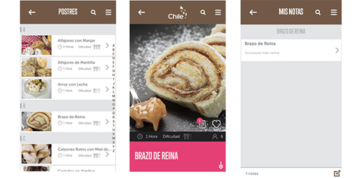

Esta mañana la Fundación Imagen de Chile lanzó una nueva aplicación para dispositivos móviles que tiene busca promover preparaciones que están presentes en el país y recojan la herencia cultural de América Latina. El nuevo desarrollo, bajo el nombre “Recetas de Chile“, está disponible tanto para iOS como para Android.
La app considera cinco categorías: Aperitivos, Ensaladas, Fondos, Sándwich y Postres, que incluyen información sobre niveles de dificultad y tiempos de preparación.
Algunos de los platos tradicionales incluidos son cazuelas, chupes, estofado, cancato, humita y pulmay, pero también se consideraron opciones como empanada de charqui de llama y pebre de cochayuyo, entre otros.
Una de las novedades de esta aplicación es que los usuarios tienen la posibilidad de escribir sus propias notas sobre las recetas, señalando por ejemplo ajustes en tiempos de preparación, cantidades o períodos de cocción según sus preferencias. De esta forma, la próxima vez que accedan a la receta, esta incorporará dichas consideraciones para optimizar los resultados.
Durante el lanzamiento de la aplicación, la directora ejecutiva de la Fundación, Myriam Gómez, señaló que “estamos viendo cómo cada vez más los chilenos se identifican con nuestra cocina” y añadió que “un reciente estudio de opinión pública nuestro arrojó que un 82% de los chilenos considera que la cocina abre un espacio para compartir y disfrutar“.
Cabe destacar que esta aplicación es el segundo proyecto de este tipo implementado por la institución. Anteriormente, la Fundación desarrolló la app Chile Mobile Observatory, que contiene imágenes obtenidas por los observatorios instalados en territorio chileno, y que fue premiada en las categorías Ciencias y Educación en los MobileWebAwards 2015.